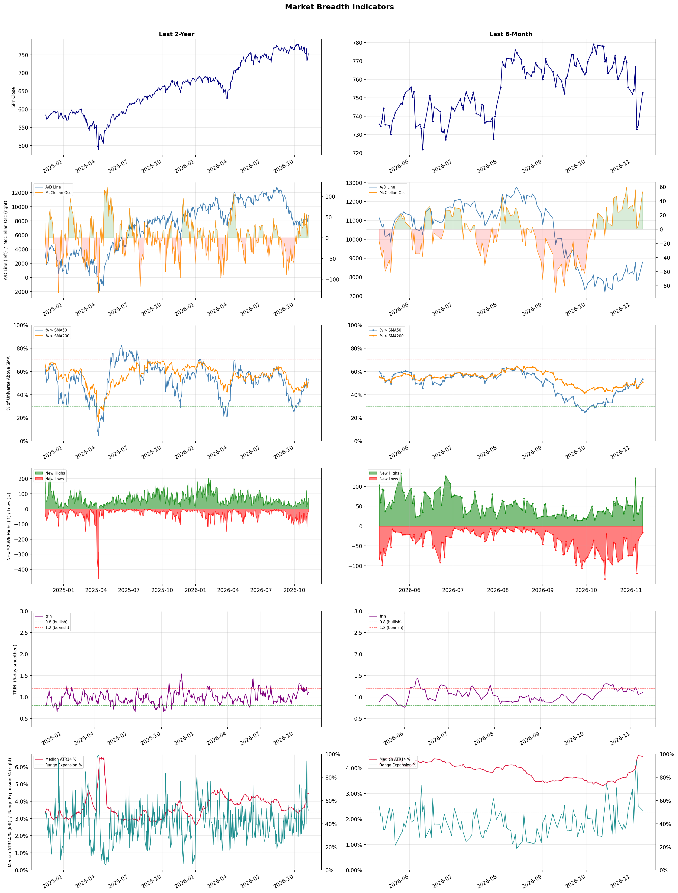

A daily market breadth and sector rotation report for active investors
| Item | Read |
|---|---|
| Regime | Selective Risk-On |
| Risk posture | Selective |
| Universe | 1,312 stocks tracked · 71 new 52-week highs · 30 active swing setups |
| Breadth | 53.4% of tracked stocks are above SMA50 — neutral range, new highs exceed new lows (71 vs 17) |
| Leadership | Apparel Manufacturing, Advertising Agencies, and Health Information Services |
| Weakest groups | Other Industrial Metals & Mining, Uranium, and Computer Hardware |
Use this report to prioritize research and chart review; validate entries, stops, liquidity, earnings, and risk before acting.
| Item | Read |
|---|---|
| Primary read | Selective Risk-On regime with Selective risk posture. |
| Research queue | FIGS, VFC, PVH, LEVI, ZGN |
| Leadership focus | Apparel Manufacturing, Advertising Agencies, and Health Information Services |
| Caution list | Other Industrial Metals & Mining, Uranium, and Computer Hardware |
| Review prompt | Check extension risk, chart location, fundamentals, valuation, and earnings before using any research row. |
| Item | Read |
|---|---|
| Primary read | 0 active risk warnings; use screen output as watchlist input only. |
| Bullish screens | SDGR, ARHS, SG, ELAN, TEVA |
| Bearish screens | SVC, FIS, VRRM, GNTX, SLDP |
| Alerts / levels | Automated trigger, stop, ATR, liquidity, reward/risk, and event-risk levels are pending future enrichment. |
| Review prompt | Open the linked chart, define trigger and invalidation, then check liquidity and event risk independently. |
Risk Posture: Selective — screen backdrop supports selective research in leading industries
Metric context: McClellan below -50 = elevated selling pressure; below -100 = washout territory. Range Expansion = share of stocks with daily range above their 20-day average. Signal Density = share of tracked names appearing in signal screens.
| Breadth Date | % > SMA50 | % > SMA200 | New Highs | New Lows | McClellan | Median Range | Avg Range | Median ATR14 | Range Expansion | Signal Density |
|---|---|---|---|---|---|---|---|---|---|---|
| 2026-11-09 | 53.4% | 50.8% | 71 | 17 | 53.0 | 3.8% | 5.0% | 4.5% | 51.6% | 5.9% |

Prior comparison date: November 6, 2026
| Metric | Prior | Current | Change |
|---|---|---|---|
| Regime | Neutral | Selective Risk-On | changed |
| Risk Posture | Cautious | Selective | changed |
| % > SMA50 | 46.5% | 53.4% | +6.9 pts |
| % > SMA200 | 45.9% | 50.8% | +4.9 pts |
| New Highs | 30 | 71 | +41 |
| New Lows | 35 | 17 | +18 |
Top-10 industries entering: REIT - Hotel & Motel and Restaurants. Top-10 industries leaving: Beverages - Non-Alcoholic and Insurance Brokers. New multi-signal long setups: ADPT, ARHS, ELAN, EWTX, FLYW, JAN, MRNA, MRVI. New multi-signal short setups: FIS, GNTX.
| Status | Tickers | Read |
|---|---|---|
| Added | ADPT, ARHS, AZTA, ELAN, EVGO, EWTX, FIS, FLYW | New technical screen matches vs prior report. |
| Removed | ADTN, ALLO, AMSC, APTV, ARDX, CBOE, COIN, MFA | No longer present in today's technical screen matches. |
| Still Active | AER, AHR, ALKS, APP, BLMN, BMY, EVRG, IBN | Appeared in both current and prior reports. |
| Promoted | SDGR | Model Screen Score improved by at least 15 points. |
| Downgraded | none | Model Screen Score declined by at least 15 points. |
| Direction | Industry | ETF | Prior Rank | Current Rank | Days | Rank Change |
|---|---|---|---|---|---|---|
| Rose | Restaurants | N/A | 79 | 9 | 42 | +70 |
| Rose | Leisure | N/A | 80 | 17 | 42 | +63 |
| Rose | Airlines | N/A | 75 | 14 | 14 | +61 |
| Rose | Advertising Agencies | N/A | 56 | 2 | 28 | +54 |
| Rose | Footwear & Accessories | N/A | 60 | 11 | 42 | +49 |
Bull: The restaurant industry is experiencing a relative strength rise due to a combination of resilient consumer spending and strategic positioning by key players, as highlighted in recent headlines. Despite short-term turbulence, such as soft August dining traffic and sector-wide selling, analysts see opportunity in undervalued restaurant stocks, suggesting that the long-term outlook remains positive. Additionally, reports of specific companies like Darden Restaurants outperforming the broader consumer discretionary sector indicate that certain brands are effectively navigating challenges, positioning them well for future growth.
Bear: While some analysts highlight resilient consumer spending and strategic positioning as positive indicators for the restaurant industry, the recent decline in dining traffic and significant stock drops, such as Cheesecake Factory's 5.7% plunge, suggest underlying vulnerabilities. The soft August dining traffic raises concerns about consumer confidence and discretionary spending, which could indicate a broader trend of tightening budgets as economic pressures mount. Moreover, the notion that certain companies are outperforming the consumer discretionary sector may not be sustainable if overall market conditions continue to weaken, leading to potential overvaluation in the sector.
Verdict: The restaurant industry's recent rise can be attributed to resilient consumer spending and strategic positioning by key players, which has led to optimism about undervalued stocks despite short-term challenges. However, the key risk lies in the declining dining traffic and potential consumer budget tightening, which could undermine growth if economic pressures persist. Investors should closely monitor consumer confidence indicators and be cautious of overvaluations in the sector.
Sources: Google News
Bull: The Leisure industry is experiencing rising relative strength primarily due to a robust recovery in travel and tourism, as highlighted by multiple sources emphasizing growth opportunities despite industry pressures. Factors such as increasing consumer demand for travel, leisure activities, and recreation, along with a resurgence in disposable income post-pandemic, are driving investor interest, as evidenced by articles identifying attractive stocks and growth potential in this sector. Additionally, the positive sentiment surrounding leisure stocks suggests that investors are recognizing the resilience and adaptability of companies within the industry, positioning them favorably for future growth.
Bear: While the leisure industry may currently exhibit rising relative strength, this trend could be misleading due to underlying economic pressures such as inflation, rising interest rates, and potential recession fears that could dampen consumer spending on non-essential activities. Additionally, the recent headlines may reflect a temporary surge in interest rather than sustainable growth, as many companies in the sector face significant operational challenges, including labor shortages and increased costs, which could undermine profitability and long-term viability.
Verdict: The leisure industry's rising relative strength is fundamentally driven by a post-pandemic recovery in travel and tourism, fueled by increased consumer demand and disposable income. However, investors should remain cautious of the key risk posed by inflation and rising interest rates, which could constrain consumer spending on leisure activities and impact the profitability of companies in the sector.
Sources: Google News
Bull: The rising relative strength of the airline industry can be attributed to improved investor sentiment following recent earnings reports and target upgrades from major financial institutions. Despite United Airlines' disappointing earnings, the stock has surged, indicating market confidence in the sector's recovery and resilience, as highlighted by analysts raising targets for major players like Delta and Southwest. Additionally, the focus on long-term investment opportunities, as noted in articles discussing the best airline stocks to buy in 2026, suggests that investors are optimistic about sustained demand and profitability in the airline sector moving forward.
Bear: While the rising relative strength of the airline industry may seem promising, it is crucial to recognize that this surge is largely driven by short-term market sentiment rather than fundamental improvements in the sector. Disappointing earnings from United Airlines highlight ongoing operational challenges, including rising fuel costs and labor issues, which could undermine profitability. Furthermore, the optimism surrounding long-term investments may overlook the potential for economic downturns or geopolitical tensions that could significantly impact travel demand and airline revenues in the coming years.
Verdict: The airline industry's recent rise can be fundamentally attributed to improved investor sentiment fueled by earnings reports and target upgrades from major financial institutions, suggesting confidence in recovery and long-term profitability despite short-term challenges. However, key risks remain, particularly from operational issues like rising fuel costs and labor disputes, as well as potential economic downturns or geopolitical tensions that could adversely affect travel demand and airline revenues. Investors should remain cautious and consider these factors when evaluating opportunities in the sector.
Sources: Google News
Bull: The Advertising Agencies sector is experiencing a rising relative strength primarily due to its strategic adaptation to artificial intelligence (AI), as highlighted in multiple headlines discussing the sector's potential to leverage AI for enhanced efficiency and effectiveness. With reports from Bloomberg indicating that ad agency stocks are turning AI disruption to their advantage, and the recognition of top-performing stocks in the industry by outlets like Yahoo Finance and The Motley Fool, investor confidence is bolstered by the belief that these agencies are well-positioned for growth in an increasingly digital landscape. Moreover, the positive outlook on major players like Publicis, contrasted with the challenges faced by competitors such as WPP, underscores a favorable environment for innovation and market leadership within the sector.
Bear: While the advertising agencies sector may currently exhibit rising relative strength, this trend could be misleading as it may not fully account for the broader economic challenges and potential overvaluation of stocks in the industry. The reliance on AI, while promising, also introduces significant risks, such as increased competition from tech giants and startups that can leverage AI more effectively, potentially eroding margins for traditional agencies. Furthermore, the cyclical nature of advertising spending, particularly in uncertain economic conditions, could lead to a downturn that undermines the perceived growth trajectory of these companies.
Verdict: The advertising agencies sector is experiencing a rise in relative strength primarily due to their strategic integration of AI technologies, which enhances operational efficiency and effectiveness, fostering investor confidence in their growth potential. However, key risks remain, particularly the threat of intensified competition from tech giants and startups that can leverage AI more effectively, as well as the cyclical nature of advertising spending that could expose these agencies to downturns in economic uncertainty. Investors should closely monitor these competitive dynamics and economic indicators to assess the sustainability of the sector's growth.
Sources: Google News
Bull: The Footwear & Accessories industry is experiencing rising relative strength primarily due to increasing consumer demand and regulatory changes that promote sustainability, as highlighted by the new EU rules aimed at reducing waste from unsold products. Additionally, the mention of top-performing shoe stocks for 2026 suggests investor optimism and potential growth opportunities within the sector, further bolstered by the industry's resilience despite challenges faced by individual companies like Apex Footwear. This combination of favorable regulations and positive market sentiment positions the sector for continued strength.
Bear: While the bull thesis highlights rising consumer demand and regulatory changes as positive drivers for the Footwear & Accessories industry, it overlooks critical challenges such as the significant underperformance of individual companies like Apex Footwear, which reported a meager profit of just Tk1 crore from Tk890 crore in exports. Additionally, the new EU regulations, while aimed at sustainability, may impose increased operational costs and logistical complexities for manufacturers, potentially squeezing margins and dampening overall profitability in the sector. This combination of weak individual company performance and potential regulatory burdens could hinder the industry's growth trajectory.
Verdict: The Footwear & Accessories industry is likely experiencing rising strength due to robust consumer demand and favorable sustainability regulations, which are driving investor optimism and growth potential. However, a key risk lies in the underperformance of individual companies, such as Apex Footwear, and the possibility that new EU regulations could increase operational costs, potentially squeezing margins and affecting overall profitability. Investors should monitor individual company performance closely and assess the impact of regulatory changes on operational efficiency.
Sources: Google News
| Direction | Industry | ETF | Prior Rank | Current Rank | Days | Rank Change |
|---|---|---|---|---|---|---|
| Fell | Computer Hardware | XLK | 5 | 85 | 42 | -80 |
| Fell | Semiconductor Equipment & Materials | SOXX | 4 | 84 | 35 | -80 |
| Fell | Semiconductors | SOXX | 7 | 80 | 42 | -73 |
| Fell | Copper | COPX | 3 | 76 | 28 | -73 |
| Fell | Electronic Components | XLK | 6 | 78 | 35 | -72 |
Bear: While the bull analyst attributes the decline in relative strength of the Computer Hardware industry to a shift in investor sentiment and a pivot towards emerging technologies, this overlooks the fundamental challenges facing the sector, such as supply chain disruptions, rising production costs, and a potential slowdown in consumer demand for hardware as the market matures. Furthermore, the recent headlines suggest a broader skepticism about the sustainability of AI hardware investments, indicating that the sell-off may not just be a temporary reallocation but a sign of deeper issues within the sector that could hinder recovery.
Bull: The Computer Hardware industry is experiencing a decline in relative strength primarily due to a shift in investor sentiment away from AI hardware stocks, as highlighted by Business Insider and Reuters, where hedge funds have been offloading chip stocks amid a broader sell-off in AI-related investments. Additionally, the focus on emerging technologies like quantum computing, as mentioned by The Motley Fool, suggests that investors are reallocating their capital toward sectors perceived as having higher growth potential, further contributing to the weakening of the Computer Hardware segment in comparison to other industries.
Verdict: The Computer Hardware industry's decline appears to stem from a combination of shifting investor sentiment away from AI hardware stocks and fundamental challenges such as supply chain disruptions and rising production costs. The bear case highlights a key risk: the potential for a sustained slowdown in consumer demand as the market matures, which could further exacerbate the sector's struggles and hinder any recovery efforts. Investors should closely monitor these dynamics and consider diversifying into sectors with more robust growth prospects.
Sources: Google News
Bear: While the bull analyst attributes the sector's decline to profit-taking and short-term caution, a more concerning underlying issue is the potential for a prolonged downturn in semiconductor demand driven by macroeconomic factors such as rising interest rates and inflation, which can dampen capital expenditures in technology. Additionally, the uncertainty surrounding the chip equipment outlook suggests that the industry's growth may not be as robust as previously anticipated, especially as companies reassess their investment strategies in light of fluctuating demand and geopolitical tensions affecting supply chains. This could indicate that the current weakness is not merely a temporary pullback but rather a sign of deeper structural challenges in the semiconductor market.
Bull: The Semiconductor Equipment & Materials sector is experiencing a decline in relative strength primarily due to profit-taking after a strong performance in the previous year, as indicated by the headlines reporting significant drops in stocks like Applied Materials and Lam Research. Additionally, uncertainty surrounding the chip equipment outlook, as highlighted in the Yahoo Finance article, has contributed to investor caution, leading to a pullback in stock prices despite positive long-term forecasts from industry leaders. This combination of short-term profit-taking and cautious sentiment regarding future growth prospects is driving the relative weakness in the sector.
Verdict: The semiconductor equipment and materials sector is experiencing a decline primarily due to profit-taking after a strong previous year, coupled with investor caution stemming from uncertainty in the chip equipment outlook. However, a key risk lies in the potential for a prolonged downturn in semiconductor demand driven by macroeconomic factors like rising interest rates and inflation, which could lead to reduced capital expenditures and indicate deeper structural challenges in the market. Investors should closely monitor economic indicators and geopolitical developments that could further impact demand and investment strategies within the sector.
Sources: Google News
Bear: While the bull thesis highlights potential innovation and demand as drivers for recovery, it underestimates the severity of the macroeconomic pressures facing the semiconductor sector, including rising interest rates and inflation, which are likely to dampen consumer and enterprise spending on technology. Additionally, the significant decline in key players like Qualcomm and Micron suggests that the challenges are not merely temporary but indicative of deeper structural issues, such as oversupply and intensifying competition, which could hinder any meaningful rebound in the sector.
Bull: The recent decline in the semiconductor sector's relative strength can be attributed to macroeconomic pressures, particularly concerns over a potential $57 billion storm impacting semiconductor stocks, as highlighted by Seeking Alpha. Additionally, the negative performance of key players like Qualcomm and Micron, which have significantly weighed down the sector, indicates broader challenges such as supply chain disruptions and pricing pressures. However, the bullish outlook remains supported by ongoing innovation and demand for semiconductor technologies, as noted in the positive coverage of stocks like Advanced Micro Devices, suggesting that the sector may rebound as these challenges are addressed.
Verdict: The semiconductor industry's recent decline is primarily driven by macroeconomic pressures, including rising interest rates and inflation, which are dampening consumer and enterprise spending. Key players like Qualcomm and Micron have faced significant challenges, indicating potential structural issues such as oversupply and increased competition that could hinder recovery. Investors should remain cautious and monitor these macroeconomic indicators, as they pose a substantial risk to any bullish outlook for the sector.
Sources: Google News
Bear: While the bull thesis highlights tariff uncertainty as a primary driver of recent declines, it overlooks fundamental issues such as slowing global demand for copper, particularly from key consumers like China, which is grappling with economic challenges. Additionally, the notion that copper stocks are merely undervalued fails to account for the potential for a prolonged downturn in prices, as increased supply from new mining projects could further exacerbate oversupply in a weakening demand environment, leading to sustained pressure on stock valuations.
Bull: The recent decline in copper's relative strength can largely be attributed to heightened uncertainty surrounding tariffs, as indicated by the headline "Copper Stocks Tumble as Tariff Doubt Reverses Record Rally." This uncertainty has led to significant sell-offs in major copper stocks like Freeport-McMoRan and Teck Resources, contributing to a broader perception that the sector is under pressure. Additionally, the commentary from analysts, such as Scotiabank's view that copper mining stocks are undervalued after a sector rout, suggests that while current sentiment is negative, there is potential for recovery as the market recalibrates.
Verdict: The recent decline in the copper industry is primarily driven by a combination of heightened tariff uncertainty and slowing global demand, particularly from China, which is facing economic challenges. The key risk from the bear case is the potential for a prolonged downturn in copper prices due to oversupply from new mining projects, which could further depress stock valuations in a weakening demand environment. Investors should remain cautious and closely monitor both macroeconomic indicators and supply dynamics before making investment decisions in the copper sector.
Sources: Google News
Bear: While the bull analyst attributes the sector's relative weakness to macroeconomic factors and mixed earnings, it overlooks the fundamental issues plaguing the electronic components industry, such as oversupply, declining demand in key markets, and increased competition from emerging technologies. Additionally, the focus on memory stocks may indicate a flight to quality, suggesting that investors are losing confidence in the broader electronic components sector's growth prospects, which could lead to further declines in stock performance as companies struggle to adapt to rapidly changing market dynamics.
Bull: The relative weakness in the Electronic Components sector can be attributed to a combination of macroeconomic factors and sector-specific challenges, as highlighted in the recent earnings reports. The Q3 earnings roundup indicates mixed performance among key players like Coherent and Plexus, suggesting that while some companies are performing well, overall sentiment may be dampened by broader economic concerns, such as supply chain disruptions or inflationary pressures impacting margins. Additionally, the focus on memory stocks as the "hottest trade" suggests a shift in investor preference towards specific sub-sectors, further contributing to the relative underperformance of the broader electronic components industry.
Verdict: The electronic components industry is experiencing a downturn primarily due to oversupply and declining demand in key markets, compounded by heightened competition from emerging technologies. While macroeconomic factors have played a role, the bear case highlights a critical risk: if companies fail to adapt to these market dynamics, investor confidence may continue to wane, leading to further stock performance declines. Investors should closely monitor company strategies and market trends to identify potential recovery signals or further deterioration.
Sources: Google News
| Industry | Rank | ETF | 7d | 14d | 28d | 42d | Chg 42d | Size | 20D | 60D | Composite | Active Setups |
|---|---|---|---|---|---|---|---|---|---|---|---|---|
| Apparel Manufacturing | 1 | N/A | 4 | 11 | 19 | 48 | +47 | 6 | 19.6% | 18.9% | 0.973 | 0 |
| Advertising Agencies | 2 | N/A | 50 | 43 | 56 | 43 | +41 | 7 | 25.7% | 12.4% | 0.961 | 0 |
| Health Information Services | 3 | N/A | 10 | 8 | 2 | 3 | 0 | 12 | 15.6% | 34.3% | 0.956 | 0 |
| Household & Personal Products | 4 | XLP | 5 | 6 | 8 | 25 | +21 | 11 | 13.7% | 19.7% | 0.934 | 0 |
| Specialty Retail | 5 | XRT | 6 | 13 | 31 | 22 | +17 | 13 | 24.2% | 15.9% | 0.931 | 0 |
| Discount Stores | 6 | XRT | 1 | 15 | 11 | 12 | +6 | 7 | 10.7% | 12.4% | 0.889 | 0 |
| Medical Care Facilities | 7 | IHF | 11 | 4 | 16 | 14 | +7 | 9 | 14.4% | 14.8% | 0.882 | 0 |
| REIT - Hotel & Motel | 8 | XLRE | 2 | 5 | 12 | 31 | +23 | 9 | 10.6% | 11.4% | 0.873 | 0 |
| Restaurants | 9 | N/A | 9 | 25 | 38 | 79 | +70 | 16 | 16.9% | 9.1% | 0.862 | 2 |
| Drug Manufacturers - General | 10 | IHE | 7 | 19 | 20 | 11 | +1 | 14 | 10.2% | 9.8% | 0.845 | 1 |
Rank columns (7d–42d) show the industry's rank that many trading days ago — lower is stronger. Chg 42d = rank change vs 42 trading days ago — positive means the industry moved up. 20D and 60D are the mean stock return within the industry over that period. Active Setups: count of today's swing-trade candidates from this industry appearing across all signal screens.
| Industry | Rank | ETF | 7d | 14d | 28d | 42d | Chg 42d | Size | 20D | 60D | Composite | Active Setups |
|---|---|---|---|---|---|---|---|---|---|---|---|---|
| Other Industrial Metals & Mining | 87 | N/A | 86 | 86 | 80 | 66 | -21 | 21 | -12.4% | -31.7% | 0.070 | 0 |
| Uranium | 86 | URA | 87 | 87 | 83 | 82 | -4 | 6 | -10.3% | -31.7% | 0.081 | 0 |
| Computer Hardware | 85 | XLK | 83 | 63 | 27 | 5 | -80 | 15 | -20.2% | -31.4% | 0.087 | 0 |
| Semiconductor Equipment & Materials | 84 | SOXX | 85 | 77 | 14 | 6 | -78 | 17 | -21.5% | -30.5% | 0.097 | 0 |
| Electrical Equipment & Parts | 83 | XLI | 84 | 85 | 73 | 51 | -32 | 12 | -12.9% | -34.2% | 0.099 | 0 |
| Oil & Gas Equipment & Services | 82 | XES | 69 | 60 | 61 | 27 | -55 | 17 | -14.2% | -22.9% | 0.106 | 0 |
| Communication Equipment | 81 | IYZ | 73 | 67 | 26 | 23 | -58 | 15 | -19.3% | -27.7% | 0.128 | 0 |
| Semiconductors | 80 | SOXX | 77 | 66 | 15 | 7 | -73 | 37 | -17.9% | -23.7% | 0.129 | 0 |
| Auto Parts | 79 | N/A | 80 | 78 | 72 | 59 | -20 | 19 | -9.8% | -23.1% | 0.133 | 0 |
| Electronic Components | 78 | XLK | 81 | 79 | 22 | 8 | -70 | 10 | -15.5% | -25.9% | 0.152 | 0 |
Rank columns (7d–42d) show the industry's rank that many trading days ago — lower is stronger. Chg 42d = rank change vs 42 trading days ago — positive means the industry moved up. 20D and 60D are the mean stock return within the industry over that period. Active Setups: count of today's swing-trade candidates from this industry appearing across all signal screens.
These are research candidates from top-ranked stocks, capped at five names per industry to avoid over-concentration. Returns shown (60D, 120D, 250D) are historical — they reflect where prices have already moved, not forward expectations. Extension Risk flags names that may require extra patience or a better entry point. They are not buy signals.
Chart: TV = TradingView chart (opens in browser); PDF = local chart file (if downloaded).
| Ticker | Name | Industry | Industry Rank | Market Cap | 60D Hist | 120D Hist | 250D Hist | Extension Risk | Research Reason | Chart |
|---|---|---|---|---|---|---|---|---|---|---|
| FIGS | FIGS Inc | Apparel Manufacturing | 1 | N/A | 46.9% | 88.0% | 144.4% | Constructive | Top-ranked in industry | TV |
| VFC | VF Corp | Apparel Manufacturing | 1 | N/A | 41.4% | 26.3% | 46.0% | Constructive | Top-ranked in industry | TV |
| PVH | PVH Corp | Apparel Manufacturing | 1 | N/A | 12.5% | 16.9% | 21.4% | Constructive | Top-ranked in industry | TV |
| LEVI | Levi Strauss & Co. | Apparel Manufacturing | 1 | N/A | 7.7% | 17.6% | 17.4% | Constructive | Top-ranked in industry | TV |
| ZGN | Ermenegildo Zegna NV | Apparel Manufacturing | 1 | N/A | 4.2% | 15.7% | 45.2% | Constructive | Top-ranked in industry | TV |
| APP | Applovin | Advertising Agencies | 2 | N/A | 30.0% | -14.0% | -37.1% | Constructive | Top-ranked in industry | TV |
| STGW | Stagwell | Advertising Agencies | 2 | N/A | 26.1% | 82.8% | 141.1% | Constructive | Top-ranked in industry | TV |
| MGNI | Magnite | Advertising Agencies | 2 | N/A | 17.4% | 116.9% | 99.5% | Extended | Top-ranked in industry; extended | TV |
| TTD | The Trade Desk | Advertising Agencies | 2 | N/A | 5.6% | -29.4% | -65.5% | Constructive | Top-ranked in industry | TV |
| EVC | Entravision Communications | Advertising Agencies | 2 | N/A | 3.9% | 16.4% | 232.9% | Constructive | Top-ranked in industry | TV |
| SDGR | Schrodinger | Health Information Services | 3 | N/A | 89.8% | 178.5% | 82.6% | Extended | Top-ranked in industry; extended | TV |
| TEM | Tempus AI | Health Information Services | 3 | N/A | 62.1% | 85.5% | 17.6% | Extended | Top-ranked in industry; extended | TV |
| CERT | Certara | Health Information Services | 3 | N/A | 52.8% | 166.2% | 41.8% | Extended | Top-ranked in industry; extended | TV |
| HNGE | Hinge Health | Health Information Services | 3 | N/A | 38.1% | 122.3% | 175.8% | Extended | Top-ranked in industry; extended | TV |
| TDOC | Teladoc Health | Health Information Services | 3 | N/A | 31.9% | 35.9% | 19.7% | Constructive | Top-ranked in industry | TV |
| COTY | Coty Inc | Household & Personal Products | 4 | N/A | 48.1% | 118.7% | 18.9% | Extended | Top-ranked in industry; extended | TV |
| EL | Estee Lauder | Household & Personal Products | 4 | N/A | 31.9% | 49.7% | 28.0% | Constructive | Top-ranked in industry | TV |
| CHD | Church & Dwight | Household & Personal Products | 4 | N/A | 9.9% | 16.6% | 33.2% | Constructive | Top-ranked in industry | TV |
| KMB | Kimberly-Clark | Household & Personal Products | 4 | N/A | 2.6% | 19.0% | 14.1% | Constructive | Top-ranked in industry | TV |
| CLX | Clorox | Household & Personal Products | 4 | N/A | 1.3% | 17.0% | 5.9% | Constructive | Top-ranked in industry | TV |
These are technical screen matches from existing signal files. They are not trade recommendations. Trigger, stop, ATR, liquidity, reward/risk, and event risk still require separate validation until those inputs are available.
Model Screen Score is weighted by signal count, industry rank, freshness, and setup type. It is not a probability of profit, expected return, or suitability rating. Industry cap: max 3 candidates per industry.
Signal glossary: Momentum Pullback = stock in an uptrend that has pulled back 10–30% and shows re-entry conditions. MA Compression = short- and long-term moving averages converging, often preceding a directional move. Three-Day Up/Down = three consecutive closes in the same direction. New 52Wk High/Low = price reached a new annual extreme.
Chart: TV = TradingView chart (opens in browser); PDF = local chart file (if downloaded).
| Ticker | Industry | Setups | Close | Industry Rank | Signal Count | Model Screen Score | Reason | Chart |
|---|---|---|---|---|---|---|---|---|
| SDGR | Health Information Services | New 52Wk High; Three-Day Up | 33.39 | 3 | 2 | 100 | Multi-signal; top industry breakout | TV |
| ARHS | Specialty Retail | New 52Wk High; Three-Day Up | 15.02 | 5 | 2 | 93 | Multi-signal; top industry breakout | TV |
| SG | Restaurants | New 52Wk High; Three-Day Up | 13.36 | 9 | 2 | 85 | Multi-signal; top industry breakout | TV |
| ELAN | Drug Manufacturers - Specialty & Generic | New 52Wk High; Three-Day Up | 26.84 | 18 | 2 | 77 | Multi-signal; new-high strength | TV |
| TEVA | Drug Manufacturers - Specialty & Generic | New 52Wk High; Three-Day Up | 42.97 | 18 | 2 | 77 | Multi-signal; new-high strength | TV |
| ADPT | Diagnostics & Research | New 52Wk High; Three-Day Up | 30.26 | 22 | 2 | 77 | Multi-signal; new-high strength | TV |
| EVRG | Utilities - Regulated Electric | MA Compression; New 52Wk High | 87.99 | 28 | 2 | 75 | Multi-signal; new-high strength | TV |
| AER | Rental & Leasing Services | New 52Wk High; Three-Day Up | 175.43 | 37 | 2 | 70 | Multi-signal; new-high strength | TV |
| AHR | REIT - Healthcare Facilities | New 52Wk High; Three-Day Up | 58.96 | 39 | 2 | 70 | Multi-signal; new-high strength | TV |
| JAN | REIT - Residential | MA Compression; Three-Day Up | 32.02 | 34 | 2 | 65 | Multi-signal; compression setup | TV |
| EWTX | Biotechnology | New 52Wk High; Three-Day Up | 48.74 | 50 | 2 | 65 | Multi-signal; new-high strength | TV |
| MRNA | Biotechnology | New 52Wk High; Three-Day Up | 269.00 | 50 | 2 | 65 | Multi-signal; new-high strength | TV |
| MRVI | Biotechnology | Momentum Pullback; Three-Day Up | 8.02 | 50 | 2 | 65 | Multi-signal; pullback setup | TV |
| IBN | Banks - Regional | New 52Wk High; Three-Day Up | 34.45 | 55 | 2 | 65 | Multi-signal; new-high strength | TV |
| FLYW | Software - Infrastructure | New 52Wk High; Three-Day Up | 22.13 | 58 | 2 | 65 | Multi-signal; new-high strength | TV |
| ZGN | Apparel Manufacturing | Three-Day Up | 14.34 | 1 | 1 | 55 | Single-signal; top industry setup | TV |
| APP | Advertising Agencies | Three-Day Up | 410.00 | 2 | 1 | 55 | Single-signal; top industry setup | TV |
| TEM | Health Information Services | Three-Day Up | 84.44 | 3 | 1 | 55 | Single-signal; top industry setup | TV |
| BLMN | Restaurants | Momentum Pullback | 10.28 | 9 | 1 | 50 | Single-signal; top industry pullback | TV |
| EVGO | Specialty Retail | Three-Day Up | 1.84 | 5 | 1 | 48 | Single-signal; top industry setup | TV |
| QSR | Restaurants | MA Compression | 77.52 | 9 | 1 | 45 | Single-signal; top industry setup | TV |
| BMY | Drug Manufacturers - General | MA Compression | 62.14 | 10 | 1 | 45 | Single-signal; top industry setup | TV |
| ALKS | Drug Manufacturers - Specialty & Generic | Momentum Pullback | 46.17 | 18 | 1 | 42 | Single-signal; pullback setup | TV |
| RYAAY | Airlines | Three-Day Up | 61.75 | 14 | 1 | 40 | Single-signal; upside pattern | TV |
| AZTA | Medical Instruments & Supplies | Three-Day Up | 40.95 | 15 | 1 | 40 | Single-signal; upside pattern | TV |
Bearish setups — stocks making new lows or showing persistent downside patterns. Validate carefully before acting.
| Ticker | Industry | Setups | Close | Industry Rank | Signal Count | Model Screen Score | Reason | Chart |
|---|---|---|---|---|---|---|---|---|
| SVC | REIT - Hotel & Motel | New 52Wk Low; Three-Day Down | 5.15 | 8 | 2 | 55 | Multi-signal; new-low weakness | TV |
| FIS | Information Technology Services | New 52Wk Low; Three-Day Down | 28.34 | 49 | 2 | 35 | Multi-signal; new-low weakness | TV |
| VRRM | Information Technology Services | New 52Wk Low; Three-Day Down | 2.13 | 49 | 2 | 35 | Multi-signal; new-low weakness | TV |
| GNTX | Auto Parts | New 52Wk Low; Three-Day Down | 19.50 | 79 | 2 | 25 | Multi-signal; new-low weakness | TV |
| SLDP | Auto Parts | New 52Wk Low; Three-Day Down | 1.93 | 79 | 2 | 25 | Multi-signal; new-low weakness | TV |
How To Use This Report
| Use | Purpose |
|---|---|
| Market map | Start with breadth, regime, risk warnings, and what changed since the prior report. |
| Industry scan | Use leading, deteriorating, rising, and declining industries to focus research. |
| Research queue | Treat long-term candidates as names for deeper fundamental, valuation, and chart review. |
| Technical review | Treat bullish and bearish screen matches as watchlist inputs that require independent trigger, stop, liquidity, and event-risk checks. |
| Source follow-up | Use chart links and source files to verify raw inputs before relying on any row. |
What This Report Is Not
| Not | Meaning |
|---|---|
| Investment advice | The report does not evaluate personal objectives, risk tolerance, tax situation, account type, or suitability. |
| Buy/sell recommendation | Named tickers are research candidates or screen matches, not recommendations to transact. |
| Price target | The report does not provide fair value estimates, targets, or expected returns. |
| Trade plan | Trigger, stop, sizing, reward/risk, liquidity, and event-risk review remain separate user work. |
| Performance claim | Model Screen Score is not validated historical performance or a forecast of future results. |
| Item | Note |
|---|---|
| Version | Daily Report Methodology v1 |
| Model Screen Score | Screen-fit rank based on signal count, industry rank, freshness, and setup type. |
| Not predictive proof | The score is not expected return, probability of profit, historical validation, or suitability analysis. |
| Industry ranks | Composite industry ranks use existing daily ranking outputs and historical rank columns when available. |
| Research candidates | Long-term rows are research candidates from ranked stocks and leading industries, with historical returns labeled as historical only. |
| Technical matches | Bullish and bearish rows are screen matches requiring independent chart, trigger, stop, liquidity, and event-risk review. |
| Source | Status | Rows | Path |
|---|---|---|---|
| Market breadth | present | 1253 | breadth_20261109.csv |
| Industry composite rankings | present | 87 | all_industry_composite_20261109.csv |
| Top ranked stocks | present | 104 | top_ranked_composite_20261109.csv |
| All ranked stocks | present | 1312 | all_stocks_composite_sorted_20261109.csv |
| Top momentum pullbacks | present | 1465 | top_momentum_pullbacks_20261109.csv |
| MA compression | present | 1465 | ma_compression_stocks_20261109.csv |
| Three-day up/down | present | 98 | three_day_up_down_stocks_20261109.csv |
| New 52-week members | present | 88 | breadth_new_52wk_members_20261109.csv |
This report is generated from automated technical screens and is for informational and research purposes only. It is not investment advice, a solicitation, or a recommendation to buy or sell any security. Past performance is not indicative of future results. You are solely responsible for your own investment decisions. Consult a licensed financial advisor before acting on any information herein.